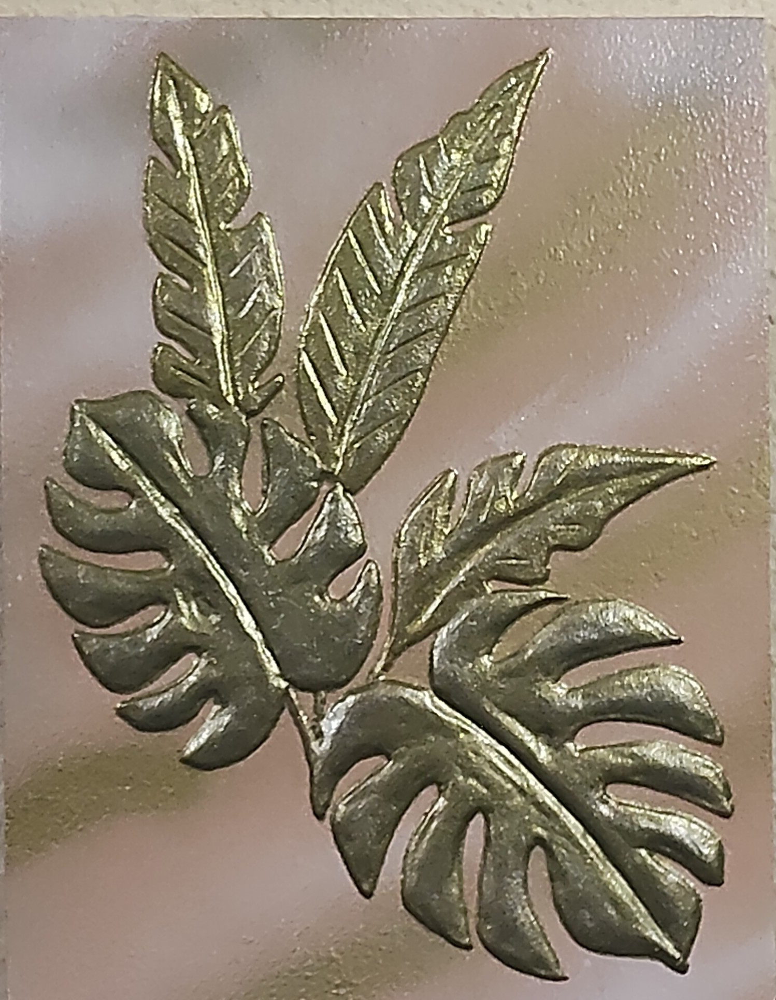

NICOLETA FILIP ART
HOJAS TROPICALES
Composición ornamental vegetal formada por varias hojas tropicales de diferentes morfologías, ejecutadas en relieve con acabado metálico sobre un fondo decorativo.
Sobre la obra
HOJAS TROPICALES presenta un conjunto de hojas tropicales dispuestas de forma superpuesta y radial, creando una composición vegetal de carácter ornamental.
Se distinguen hojas profundamente lobuladas, de inspiración monstera y filodendro, junto con hojas alargadas de nervadura central marcada. La variedad de formas aporta riqueza y ritmo visual al conjunto.
Presentación artística
El relieve enfatiza las nervaduras y los recortes naturales de cada hoja, destacando sus diferentes formas y niveles dentro de la composición.
El acabado metálico en tonos verdosos y dorados contrasta con el fondo rosado y dorado, aportando profundidad y riqueza visual al conjunto.
Ficha técnica
- Año
- 2026
- Dimensiones
- 30 × 40 cm
- Soporte
- Madera
- Técnica
- Técnica estándar.
- Categoría
- Botánica
Si deseas recibir información sobre esta obra, puedes solicitarla directamente.
SOLICITAR INFORMACIÓN →